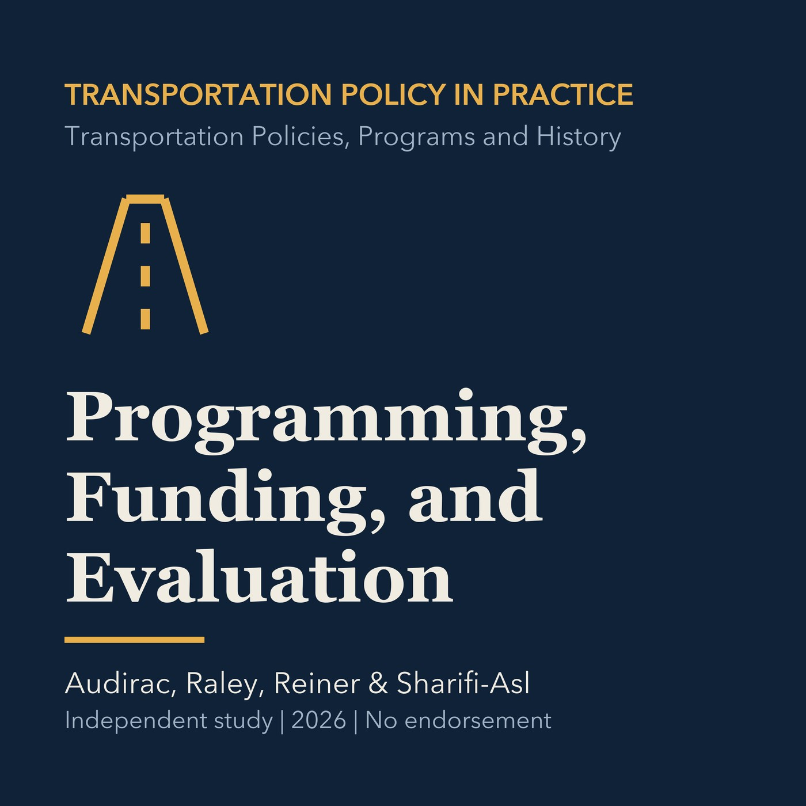

EPISODE 03
Programming, Funding, and Evaluation
Connects long-range plans to fiscally constrained project programs, performance measures, and evaluation, with a Torrance application.

- Stable GUID
a118c664-cd43-5424-98cc-cb7f88904c60- Release
- transportation-policies-programs-history-v2026.3
- SHA-256
23046df8753975fbc5f766cafb418c913a6b7422a393edac3f03a37fd4cd449f